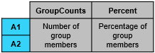
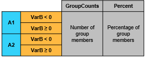

groupcounts
Number of group elements
Syntax
Description
Table Data
G = groupcounts(T,groupvars)T, the number of members in each group, and the percentage of the
data each group represents in the range [0, 100]. Groups are defined by rows in the
variables in groupvars that have the same unique combination of values.
Each row of the output table corresponds to one group. For example, G =
groupcounts(T,"HealthStatus") returns a table with the count and percentage of
each group in the variable HealthStatus.
For more information, see Group Counts Computation.
G = groupcounts(T,groupvars,groupbins)groupvars according to binning scheme
groupbins prior to grouping. For example, G =
groupcounts(T,"SaleDate","year") returns the group counts and group
percentages for all sales in T within each year according to the
grouping variable SaleDate.
G = groupcounts(___,Name,Value)G =
groupcounts(T,"Category1","IncludeMissingGroups",false) excludes the group
made from missing data of type categorical indicated by
<undefined> in Category1.
Array Data
B = groupcounts(___,Name,Value)
Examples
Input Arguments
Name-Value Arguments
Output Arguments
More About
This table illustrates group counts computations.
Sample Table T | Syntax Example | Resulting Table |
|---|---|---|
|
|
groupcounts(T,"VarA") |
 |
groupcounts(T,["VarA" "VarB"],{"none",[-Inf 0 Inf]}) |
 |

Tips
When making many calls to
groupcounts, consider converting grouping variables to typecategoricalorlogicalwhen possible for improved performance. For example, if you have a string array grouping variable (such asHealthStatuswith elements"Poor","Fair","Good", and"Excellent"), you can convert it to a categorical variable using the commandcategorical(HealthStatus).
Extended Capabilities
Version History
Introduced in R2019aSee Also
Functions
pivot|grouptransform|groupsummary|groupfilter|findgroups|splitapply|discretize|varfun|rowfun